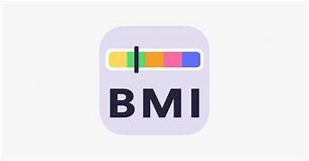
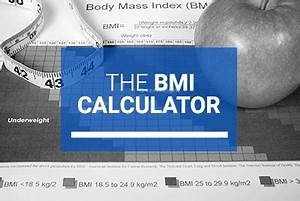

What is BMI?
BMI (Body Mass Index) is a measurement that assesses your body weight relative to your height. It is a simple tool to help you understand whether you're underweight, normal weight, overweight, or obese.
How to Calculate BMI
BMI can be calculated using the following formula:
BMI = (Weight in kilograms) / (Height in meters)^2
For example, if you weigh 70 kg and your height is 1.75 meters:
BMI = 70 / (1.75^2) = 22.86
BMI Categories
Underweight: BMI less than 18.5
Normal Weight: BMI between 18.5 and 24.9
Overweight: BMI between 25 and 29.9
Obese: BMI 30 or greater
Suggestions
Underweight: If your BMI is under 18.5, consider gaining weight through a balanced diet and regular exercise.
Normal Weight: Maintain your current weight with a healthy diet and exercise.
Overweight: If your BMI falls between 25 and 29.9, aim for weight loss through diet and exercise.
Obese: If your BMI is 30 or greater, consult with a healthcare professional for personalized advice on weight management.
Diet Recommendations
Underweight: Consume a balanced diet with lean protein, healthy fats, and complex carbohydrates. Focus on nutrient-rich foods.
Normal Weight: Maintain your current weight with a healthy diet and exercise. Include a variety of fruits, vegetables, lean proteins, and whole grains in your diet.
Overweight: Consume a calorie-controlled diet with a focus on fruits, vegetables, lean proteins, and whole grains. Limit sugar and processed foods.
Obese: Consult a registered dietitian or healthcare professional for personalized dietary guidance. Emphasis on portion control, whole foods, and regular physical activity is crucial.
Images



Additional Resources
For more detailed information on BMI, diet plans, and personalized fitness schedules, consult with a healthcare professional or a registered dietitian. They can provide you with expert advice tailored to your individual needs.